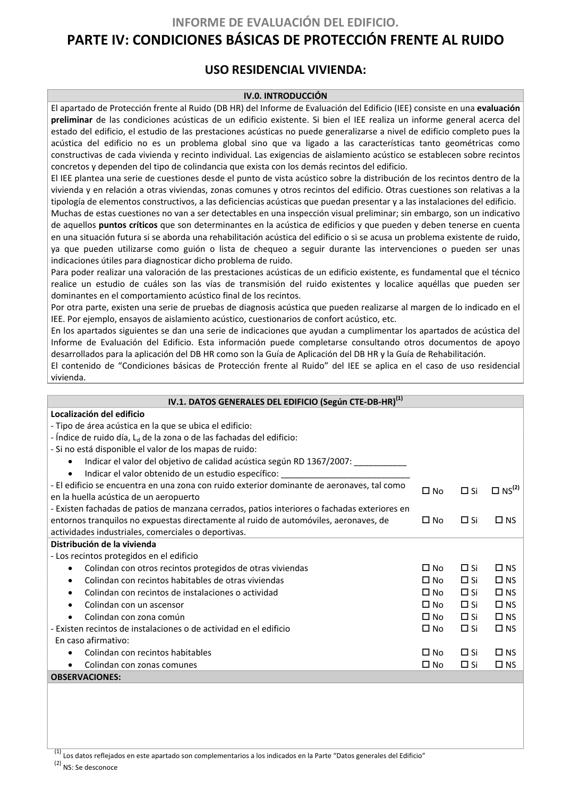

<!doctype html>
<html lang="es"><head><meta charset="utf-8">
<meta name="viewport" content="width=device-width, initial-scale=1">
<title>GUIA · p. 42 — Página 42</title><link rel="stylesheet" href="../estilo.css">
</head><body>
<nav><a href="../index.html">Índice</a> › <a href="../doc/guia-pdf-a5d4ef5252ba-2016-11-01-813669d3066c.html">GUIA</a> › p. 42</nav>

<header class="meta">
<p><strong>GUIA</strong> · Página 42 · versión 2016-11-01</p>
<p>SHA256: <code>813669d3066c0ff79457d57b80b0512a4fbb248bc5db1f7baf473c369a064738</code> · página física 42 de 65 · métodos de encabezado
solo si están cotejados.</p>
<p><a href="../doc/guia-pdf-a5d4ef5252ba-2016-11-01-813669d3066c.html">Documento</a> · <a href="guia-pdf-a5d4ef5252ba-2016-11-01-813669d3066c__p0041.html">← p. 41</a> · <a href="guia-pdf-a5d4ef5252ba-2016-11-01-813669d3066c__p0043.html">p. 43 →</a></p>
<p>Formatos: <a href="../../contenido/docs/GUIA-PDF-a5d4ef5252ba/2016-11-01__813669d3066c/pagina/p0042.md">Markdown</a> · <a href="../../contenido/docs/GUIA-PDF-a5d4ef5252ba/2016-11-01__813669d3066c/bloque/p0042.json">JSON de bloques</a> · <a href="../../contenido/docs/GUIA-PDF-a5d4ef5252ba/2016-11-01__813669d3066c/fuente.pdf#page=42">PDF p. 42</a> · <a href="../../contenido/docs/GUIA-PDF-a5d4ef5252ba/2016-11-01__813669d3066c/figura/p0042.png">imagen PNG</a></p>
</header>
<nav class="paginas"><a href="../doc/guia-pdf-a5d4ef5252ba-2016-11-01-813669d3066c.html">Documento</a> <a href="guia-pdf-a5d4ef5252ba-2016-11-01-813669d3066c__p0041.html">← p. 41</a> <a href="guia-pdf-a5d4ef5252ba-2016-11-01-813669d3066c__p0043.html">p. 43 →</a></nav>
<h2>Encabezado de la página</h2><ul><li>Sin encabezado de fuente cotejada en esta página.</li></ul>

<pre class="literal">INFORME DE EVALUACIÓN DEL EDIFICIO. 
PARTE IV: CONDICIONES BÁSICAS DE PROTECCIÓN FRENTE AL RUIDO 
USO RESIDENCIAL VIVIENDA: 
 
IV.0. INTRODUCCIÓN 
El apartado de Protección frente al Ruido (DB HR) del Informe de Evaluación del Edificio (IEE) consiste en una evaluación 
preliminar de las condiciones acústicas de un edificio existente. Si bien el IEE realiza un informe general acerca del 
estado del edificio, el estudio de las prestaciones acústicas no puede generalizarse a nivel de edificio completo pues la 
acústica del edificio no es un problema global sino que va ligado a las características tanto geométricas como 
constructivas de cada vivienda y recinto individual. Las exigencias de aislamiento acústico se establecen sobre recintos 
concretos y dependen del tipo de colindancia que exista con los demás recintos del edificio. 
El IEE plantea una serie de cuestiones desde el punto de vista acústico sobre la distribución de los recintos dentro de la 
vivienda y en relación a otras viviendas, zonas comunes y otros recintos del edificio. Otras cuestiones son relativas a la 
tipología de elementos constructivos, a las deficiencias acústicas que puedan presentar y a las instalaciones del edificio. 
Muchas de estas cuestiones no van a ser detectables en una inspección visual preliminar; sin embargo, son un indicativo 
de aquellos puntos críticos que son determinantes en la acústica de edificios y que pueden y deben tenerse en cuenta 
en una situación futura si se aborda una rehabilitación acústica del edificio o si se acusa un problema existente de ruido, 
ya que pueden utilizarse como guión o lista de chequeo a seguir durante las intervenciones o pueden ser unas 
indicaciones útiles para diagnosticar dicho problema de ruido. 
Para poder realizar una valoración de las prestaciones acústicas de un edificio existente, es fundamental que el técnico 
realice un estudio de cuáles son las vías de transmisión del ruido existentes y localice aquéllas que pueden ser 
dominantes en el comportamiento acústico final de los recintos. 
Por otra parte, existen una serie de pruebas de diagnosis acústica que pueden realizarse al margen de lo indicado en el 
IEE. Por ejemplo, ensayos de aislamiento acústico, cuestionarios de confort acústico, etc. 
En los apartados siguientes se dan una serie de indicaciones que ayudan a cumplimentar los apartados de acústica del 
Informe de Evaluación del Edificio. Esta información puede completarse consultando otros documentos de apoyo 
desarrollados para la aplicación del DB HR como son la Guía de Aplicación del DB HR y la Guía de Rehabilitación. 
El contenido de “Condiciones básicas de Protección frente al Ruido” del IEE se aplica en el caso de uso residencial 
vivienda. 
 
IV.1. DATOS GENERALES DEL EDIFICIO (Según CTE-DB-HR)(1) 
Localización del edificio 
 
 
 
- Tipo de área acústica en la que se ubica el edificio:  
 
 
 
- Índice de ruido día, Ld de la zona o de las fachadas del edificio: 
 
 
 
- Si no está disponible el valor de los mapas de ruido: 
• 
Indicar el valor del objetivo de calidad acústica según RD 1367/2007: ___________ 
• 
Indicar el valor obtenido de un estudio específico: ___________________________
 
 
 
- El edificio se encuentra en una zona con ruido exterior dominante de aeronaves, tal como 
en la huella acústica de un aeropuerto 
 No 
 Si 
 NS(2)
- Existen fachadas de patios de manzana cerrados, patios interiores o fachadas exteriores en 
entornos tranquilos no expuestas directamente al ruido de automóviles, aeronaves, de 
actividades industriales, comerciales o deportivas. 
 No 
 Si 
 NS 
Distribución de la vivienda 
 
 
 
- Los recintos protegidos en el edificio 
 
 
 
• 
Colindan con otros recintos protegidos de otras viviendas 
 No 
 Si 
 NS
• 
Colindan con recintos habitables de otras viviendas 
 No 
 Si 
 NS
• 
Colindan con recintos de instalaciones o actividad 
 No 
 Si 
 NS
• 
Colindan con un ascensor 
 No 
 Si 
 NS
• 
Colindan con zona común 
 No 
 Si 
 NS
- Existen recintos de instalaciones o de actividad en el edificio 
 No 
 Si 
 NS
  En caso afirmativo: 
 
 
 
• 
Colindan con recintos habitables 
 No 
 Si 
 NS 
• 
Colindan con zonas comunes 
 No 
 Si 
 NS 
OBSERVACIONES: 
 
(1) Los datos reflejados en este apartado son complementarios a los indicados en la Parte “Datos generales del Edificio” 
(2) NS: Se desconoce 
</pre>
<figure><a href="../../contenido/docs/GUIA-PDF-a5d4ef5252ba/2016-11-01__813669d3066c/figura/p0042.png"></a><figcaption>Imagen de la página 42 (PNG ya extraído; prevalece sobre fórmulas).</figcaption></figure>
<h2>Tablas candidatas de esta página</h2><ul><li><a href="../../contenido/docs/GUIA-PDF-a5d4ef5252ba/2016-11-01__813669d3066c/tabla/p0042_t01.json">p0042_t01.json</a> · <a href="../../contenido/docs/GUIA-PDF-a5d4ef5252ba/2016-11-01__813669d3066c/tabla/p0042_t01.csv">.csv</a> (2 × 3; candidata, no reconstruida aquí)</li><li><a href="../../contenido/docs/GUIA-PDF-a5d4ef5252ba/2016-11-01__813669d3066c/tabla/p0042_t02.json">p0042_t02.json</a> · <a href="../../contenido/docs/GUIA-PDF-a5d4ef5252ba/2016-11-01__813669d3066c/tabla/p0042_t02.csv">.csv</a> (5 × 3; candidata, no reconstruida aquí)</li></ul>
<h2>Referencias, notas y excepciones (página y vecinas)</h2><ul><li><a href="../apartado/guia-pdf-a5d4ef5252ba-2016-11-01-813669d3066c__a0031.html">ID a0031 · PARTE IV: CONDICIONES BÁSICAS DE PROTECCIÓN FRENTE AL RUIDO USO RESIDENCIAL VIVIENDA:</a></li></ul>
<h2>Apartados que incluyen esta página</h2><ul><li><a href="../apartado/guia-pdf-a5d4ef5252ba-2016-11-01-813669d3066c__a0030.html">ID a0030 · INFORME DE EVALUACIÓN DEL EDIFICIO.</a></li><li><a href="../apartado/guia-pdf-a5d4ef5252ba-2016-11-01-813669d3066c__a0031.html">ID a0031 · PARTE IV: CONDICIONES BÁSICAS DE PROTECCIÓN FRENTE AL RUIDO USO RESIDENCIAL VIVIENDA:</a></li></ul>

<footer>Generado estáticamente desde JSON normalizado; sin JavaScript ni servicios externos.
El JSON es la fuente; este HTML es caché reproducible.</footer>
</body></html>
